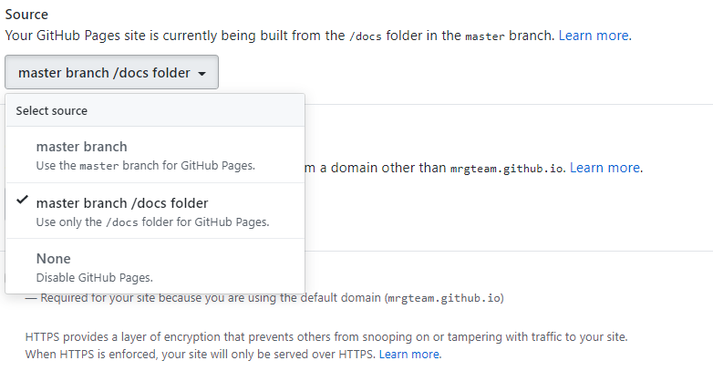

Sphinx¶
Installation¶
Sphinx is very easy to set up
$ pip install Sphinx
Note
Sphinx use a certain number of dependencies to run, you may have some missing dependencies but don’t worry. Just install them as the stages progress and retry the ones that went wrong.
Verify you Sphinx installation
$ sphinx-build --version
$ sphinx-quickstart
Quick start¶
In the previous chapter, we created a repository called get-started-with-sphinx.
Clone this empty repository and cd in.
$ git clone https://github.com/username/get-started-whith-sphinx.git
$ cd get-started-with-sphinx
Now we just have to initialize a new Sphinx project in our local repository
Note
Sphinx use a certain number of dependencies to run, you may have some missing dependencies but don’t worry. Just install them as the stages progress and retry the ones that went wrong.
$ sphinx-quickstart
Welcome to the Sphinx 2.1.2 quickstart utility.
Please enter values for the following settings (just press Enter to
accept a default value, if one is given in brackets).
Selected root path: .
You have two options for placing the build directory for Sphinx output.
Either, you use a directory "_build" within the root path, or you separate
"source" and "build" directories within the root path.
> Separate source and build directories (y/n) [n]: y
The project name will occur in several places in the built documentation.
> Project name: sphinx
> Author name(s): jerome
> Project release []: 0.0.1
If the documents are to be written in a language other than English,
you can select a language here by its language code. Sphinx will then
translate text that it generates into that language.
For a list of supported codes, see
https://www.sphinx-doc.org/en/master/usage/configuration.html#confval-language.
> Project language [en]:
Creating file .\source\conf.py.
Creating file .\source\index.rst.
Creating file .\Makefile.
Creating file .\make.bat.
Finished: An initial directory structure has been created.
You should now populate your master file .\source\index.rst and create other documentation
source files. Use the Makefile to build the docs, like so:
make builder
where "builder" is one of the supported builders, e.g. html, latex or linkcheck.
When browsing through the folder, you will notice that Sphinx has automatically created the necessary files.
Prepare to GIT¶
Now that Sphinx is initialized, we have three more steps to prepare for compatibility with GIT.
Configure the Makefile
In the make.bat file and the Makefile file replace BUILDDIR=build by BUILDDIR=docs
Create docs directory
At the root of the project, delete the build/ folder and create another one called docs/
Disable nojekyll
Create a file called .nojekyll in the docs/ folder.
First build¶
Now we are ready to perform our first Sphinx build
You just have to go to the root of the project and type
$ sphinx-build -b html source docs
This will generate the corresponding HTML files in the the docs/ folder.
Push to GitHub¶
Now that we have completed all the configuration steps, all that remains is to push on GitHub
Don’t forget to select the new source folder in the Setting GitHup Pages section of your repository.
Congratulation, your website is now reachable at https://username.github.io/get-started-with-sphinx
Personalize your Pages¶
Note
It is in the .rst files that you can start writing content for your documentation, try to modify the index.rst file.
Warning
Each time you modify an.rst file you will have to rebuild your site.
$ sphinx-build -b html source docs
Here your gona find the some .rst documentation https://deusyss.developpez.com/tutoriels/Python/SphinxDoc/
For theme change go to https://sphinx-themes.org/
I voluntarily left the source files of my documentation on the repository for you to use as an example https://github.com/MrgTeam/get-started-whith-sphinx/tree/master/source